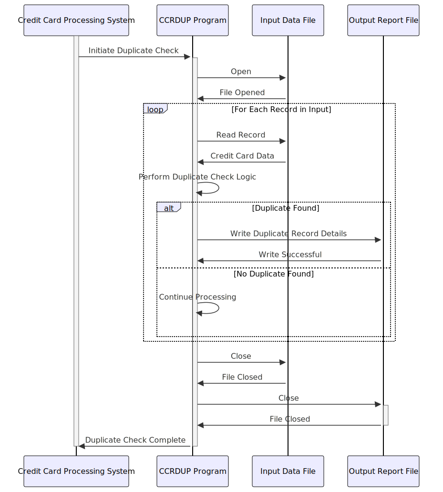

Gerado em: 1º de outubro de 2024
Descrição Resumida: Este documento descreve a estrutura de dados e os processos envolvidos na detecção de registros duplicados de cartão de crédito no aplicativo CardDemo. O sistema analisa os detalhes do cartão de crédito para identificar potenciais duplicatas, garantindo a precisão dos dados e prevenindo atividades fraudulentas.
Histórias de Usuário: Como analista de risco de crédito, preciso garantir que nosso sistema possa identificar e sinalizar potenciais registros duplicados de cartão de crédito para manter a integridade dos dados e evitar atividades fraudulentas.
Épico Relacionado: 3 - Gestão de Cartão de Crédito
Requisitos Funcionais:
Entrada de Dados: O programa recebe dados do cartão de crédito, incluindo detalhes da transação, informações do cartão e mensagens geradas pelo sistema.
Estruturação de Dados: O programa utiliza duas estruturas de dados (CCRDUPAI e CCRDUPAO) para organizar e representar as informações do cartão de crédito:
CCRDUPAI: Projetado para processamento interno eficiente de dados de cartão de crédito.CCRDUPAO: Estrutura os mesmos dados em um formato amigável para exibição em telas.Validação de Dados (Implícita): Embora não esteja explicitamente definido no código fornecido, o sistema deve incorporar regras de validação para garantir a integridade dos dados. Por exemplo:
Verificação de Duplicatas: O sistema compara os dados do cartão de crédito recebido com os registros existentes para identificar potenciais duplicatas. Os critérios de correspondência específicos e a lógica para determinar duplicatas não são detalhados no trecho de código fornecido, mas são aspectos cruciais da funcionalidade do programa.
Saída: O programa fornece saída com base nos resultados da verificação de duplicatas. Isso pode incluir:
Requisitos Não Funcionais:
Desempenho: O processo de verificação de duplicatas deve ser eficiente e ter impacto mínimo no desempenho do sistema, especialmente considerando os potenciais grandes volumes de dados de cartão de crédito.
Precisão: O sistema deve identificar duplicatas com precisão com base em critérios de correspondência predefinidos para minimizar falsos positivos e negativos.
Escalabilidade: O processo de verificação de duplicatas deve ser escalável para lidar com o aumento dos volumes de dados à medida que o sistema cresce.
Manutenibilidade: O código deve ser bem estruturado, documentado e fácil de manter e atualizar conforme as regras de negócio evoluem.
Critérios de Aceitação:
Melhorias de Código:
Melhorias de Segurança:
Diagrama Conceitual:
–Made by “Smart Engineering” (by Compass.UOL)–